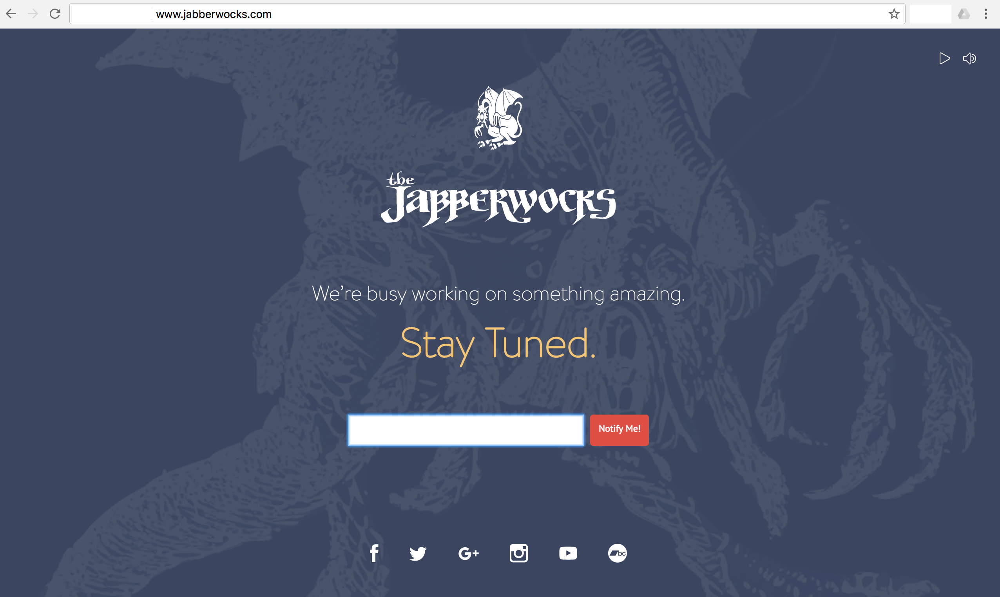
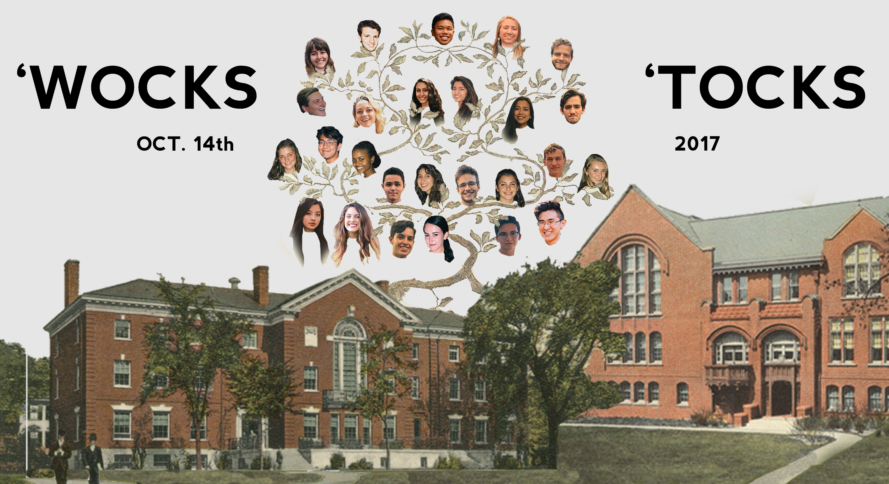
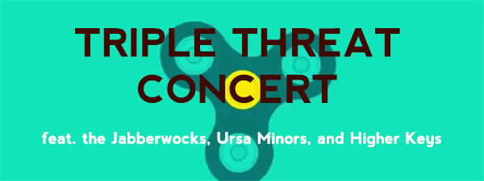
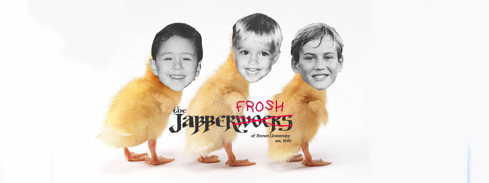
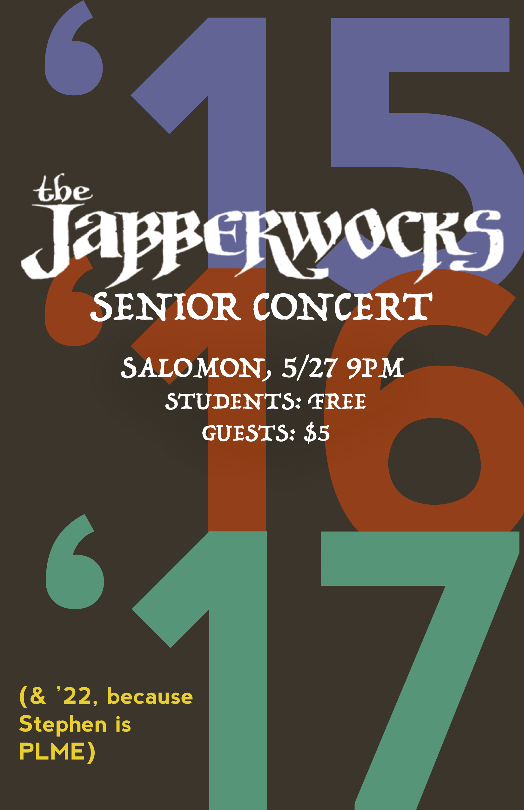

As Designer & Brand Manager for the Jabberwocks of Brown University, Brown’s oldest
a cappella group, I have updated and upgraded all brand assets for the group, designed
posters and publicity materials,
collaborated with professional web design firms to craft a new website (to function both
as outreach to potential clients as well as for secure networking within the groups alumni
association), and improved social media presences across all platforms.




